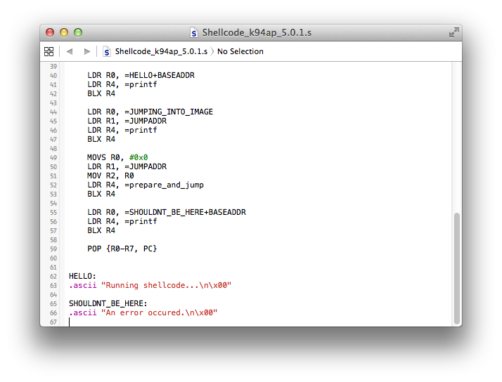
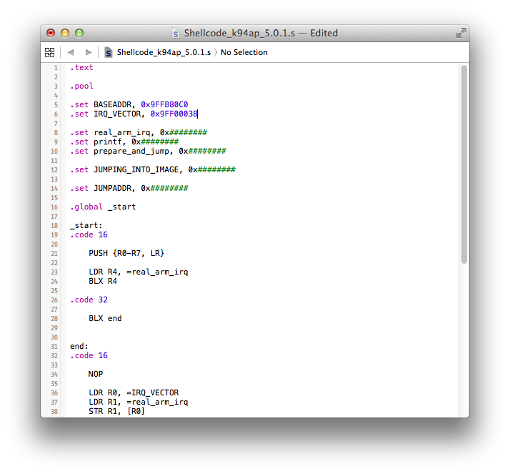
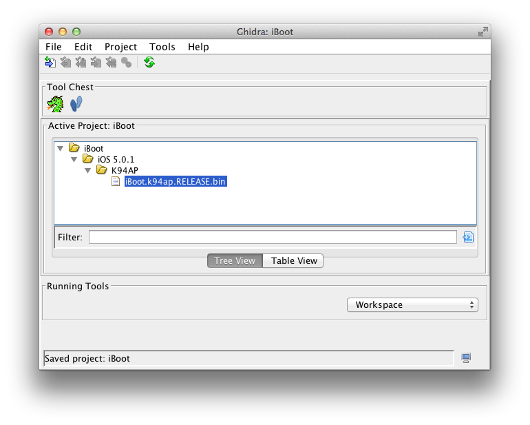
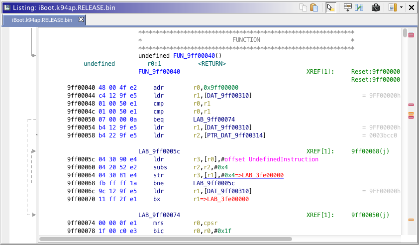
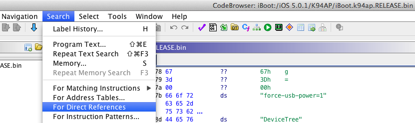

Prepare and run shellcode
Since we now have a valid ARM reset vector that will be written to 0xBFF00000, iBoot will no longer panic when the HFS+ driver reaches this address and write data from filesystem to it. We even incorporated the whole iBoot image in our iBoot.k94ap.overwrite_9ffb80c0.bin file that we will write into the Exploit partition later. This is to prevent panics about image integrity from happening, because iBoot HFS+ driver will writes a complete clean copy of iBoot over the current running iBoot in memory.
At this time, we could still apply image validation patches to the current running iBoot by simply applying those to the iBoot image in our iBoot.k94ap.overwrite_9ffb80c0.bin file. However, this won't be useful for now because we still have to figure out how we are going to stop HFSReadBlock() function from writing megabytes of data into memory. What we would like to do is to make iBoot goes back to a state where it is waiting for an input, such as recovery mode. Ideally, we would avoid working again on the current running iBoot in memory because as we know, there are additional structures than the bootloader itself such as TLB that are populated at runtime. We can't be certain that they have preserved their integrity after being touched by the overwrite process, for example the TLB data we write over the current running TLB might be slighy different depending of which functions have been executed on iBoot until now. The cleanest way I believe we could get iBoot going back to waiting state would be to make it execute a completely new image, then forcing the "new" bootloader to go in recovery mode by holding home button or hardcoding some nvram variables such as boot-partition in the image.
Now, we need to figure out how we can make the current running iBoot in memory to run a custom payload that will perform the jump routine while the bootloader HFS+ driver is currently busy to write megabytes of data into memory.
To do this, we are going to use a well known practice in ARM exploitation which consists of rewriting the IRQ (Interupt ReQuest) of the running bootloader image in order to make it jump to the shellcode once an interrupt occures. The proper term I've read about for this exploitation method is a "vector rewrite attack". A similar method has been used to exploit an old iOS 3.1, 3.1.2 iBoot USB bug, see https://www.theiphonewiki.com/wiki/Firmware for more details.
An interrupt request is how the hardware notify the CPU about some events. In other words, hardware calls the IRQ to send messages to CPU. Read this https://www.theiphonewiki.com/wiki/Firmware for more info about interrupt requests on ARM.
In our case, the CPU is running iBoot code such as the one of HFSReadBlock() function which is currently busy to write megabytes of data into memory. Once an interrupt request occures, the CPU jumps to the code located at [iBoot Base Address] + 0x38, which is 0x9FF000038 (IRQ) in memory. At this address, there is a pointer to the Interrupt Service Routine (ISR) code that the CPU will execute. As soon as some event for some hardware occures (I currently don't know which kind of events exactly), the CPU will execute the code located at the pointed address by IRQ (0x9FF00038). We are going to redirect that pointer to a custom piece of code (our shellcode) instead of the actual ISR routine code, so the CPU will run it. Our jump to shellcode success is relying on the fact that at some time, we expect that an event will occure for some hardware. To redirect the pointer at IRQ (0x9FF00038) address, all we have to do is to patch it in iBoot.k94ap.overwrite_9ffb80c0.bin then write the file back to the exploit HFS+ partition. There are some pre-requistes before we do this in order to get everything working properly. We must first know where we are going to write our compiled shellcode into the exploit HFS+ partition, which means we must also plan what the base address of our shellcode in iBoot running memory will be. The base address is, in other words, at which memory address our shellcode will be placed and executed from.
Let's take a look at our shellcode template, which is took from @nyan_satan's exploitation kit. Same as what I did with the HFSReadBlock() wrapper sample code, I marked as 0x######## the addresses that needs to be set according to the device and iBoot version you are working on.
.text
.pool
.set BASEADDR, 0x########
.set IRQ_VECTOR, 0x########
.set real_arm_irq, 0x########
.set printf, 0x########
.set prepare_and_jump, 0x########
.set JUMPING_INTO_IMAGE, 0x########
.set JUMPADDR, 0x########
.global _start
_start:
.code 16
PUSH {R0-R7, LR}
LDR R4, =real_arm_irq
BLX R4
.code 32
BLX end
end:
.code 16
NOP
LDR R0, =IRQ_VECTOR
LDR R1, =real_arm_irq
STR R1, [R0]
LDR R0, =HELLO+BASEADDR
LDR R4, =printf
BLX R4
LDR R0, =JUMPING_INTO_IMAGE
LDR R1, =JUMPADDR
LDR R4, =printf
BLX R4
MOVS R0, #0x0
LDR R1, =JUMPADDR
MOV R2, R0
LDR R4, =prepare_and_jump
BLX R4
LDR R0, =SHOULDNT_BE_HERE+BASEADDR
LDR R4, =printf
BLX R4
POP {R0-R7, PC}
HELLO:
.ascii "Hello darkness, my old friend\n\x00"
SHOULDNT_BE_HERE:
.ascii "Shouldn't be here...\n\x00"
We have few address variables to set first before we compile this shellcode.
BASEADDR: The address in iBoot running memory from which our payload is executed. In other words, the location of our shellcode in iBoot running memory.
IRQ_VECTOR: The IRQ vector address itself (not the pointer), should be always [iBoot Base Address] + 0x38.
real_arm_irq: The pointer address found at IRQ_VECTOR ([iBoot Base Address] + 0x38).
printf: The address of where the printf function is located in iBoot.
prepare_and_jump: The address of where the prepare_and_jump is located in iBoot. This routine is responsible of copying the image data to loadaddr (prepare), then finally execute it (jump). It requires an argument JUMPADDR described at 7.
JUMPING_INTO_IMAGE: The address of an existing string in iBoot we will display once our shellcode is running. This string takes an argument JUMPADDR described below.
JUMPADDR: The address we pass as an argument to prepare_and_jump. It tells iBoot where the new image to prepare and eventually jump to is located in current running memory.
Let's start with the BASEADDR variable. We usually set it as the first address in iBoot running memory which gets overwritten by filesystem data once our heap buffer overflow is triggered. From our HFSReadBlock() wrapper output, we remember that this trigger happens on the fifth HFSReadBlock() call.

In this case, our first memory address overwritten is 0x9FFB80C0, from filesystem data at position 0x28E000.
Remember, we read this HFSReadBlock() wrapper call as follow.
From position 0x28E000 on the HFS+ partition, 0xFFD92000 bytes are copied starting from position 0x9FFB80C0.
What we have to do is to set BASEADDR as 0x9FFB80C0, then make the HFS+ driver write our shellcode binary exactly at position 0x9FFB80C0 in running memory. We will prepare later in this section, a block to write into our HFS+ filesystem which contains the shellcode binary. For now, we only set the BASEADDR variable to our first memory address overwritten (0x9FFB80C0).
From @nyan_satan's exploitation kit, get the Stage1.s file or copy the paylaod code above and paste it into an empty text file (don't forget to add a additional carriage return at the end of the code or it will fail to compile). In both cases, rename the file to Shellcode_[Device identifier]_[iOS version].s, where [Device identifier] is for example k94ap (iPad 2nd Wi-Fi + 3G).  Set BASEADDR variable to 0x9FFB80C0. Next, set IRQ_VECTOR variable to [iBoot Base Address] + 0x38 (0x9FF00000 + 0x38 = 0x9FF00038).  Set real_arm_irq as the value found at position [iBoot Base Address] + 0x38, note that this value is actually a pointer.Open your decrypted stock iOS 5.0.1 iBoot in a hex editor, then look for the value at this position.
The ARM IRQ pointer value found is 0x4CB3F19F (0x9FF1B34C in normal order representation). We already have found the pointer address to printf function in our iBoot image when we prepared the HFSReadBlock() wrapper payload. The process to find it using Ghidra disassembler is described in the following section of this writeup.The address we found was 0x9FF2E9A1.
We will skip prepare_and_jump for now and find JUMPING_INTO_IMAGE first instead.
Open the stock decrypted iOS 5.0.1 iBoot image in Ghidra, we already have set it up previously.
Wait until Ghidra has completely analyzed the image. The disassembled output should looks like this.

Rebase properly the iBoot image, according to the procedure described there in this writeup.
In Ghidra toolbar, click on "Search" then "Program Text".

Search for "Jumping into image" and select "All fields".
Ghidra should bring you to a table where most iBoot strings are located and even, it should bring you right on the "Jumping into image at 0x08x\n" one.
The address we need to set as JUMPING_INTO_IMAGE is 0x9FF2FAB9. Next, the prepare_and_jump routine pointer, this one is a bit tricky to find. We can expect that the "Jumping into image at 0x08x\n" string comes near of this routine. In fact, it is printed on the console right before the routine permorms jump to a new image. So, to find the prepare_and_jump routine pointer, we can start by following "Jumping into image at 0x08x\n" references until we find the routine entry point.Go back to Ghidra, then click on the address of the "Jumping into image at 0x08x\n" string found to select it. In Ghidra toolbar, click on "Search" then "For Direct References".
You should see one result found. Be sure that "To Location" points to the proper string address.
Double-click on the reference found.
This is the reference to our "Jumping into image at 0x08x\n" string. Double-clicking on the FUN_9FF010E4:9FF01132(R) at the right of Ghidra code screen will take you to a reference of this, more precisely an inverse reference (XREF) where the string is passed as argument to printf.
Then finally, the prepare_and_jump function call should be right after the printf one.Note that the code between prinf call and prepare_and_jump one set arguments required by prepare_and_jump before calling it. We actually set such arguments in our payload like this, where BLX R4 performs the function call.
MOVS R0, #0x0
LDR R1, =JUMPADDR
MOV R2, R0
LDR R4, =prepare_and_jump
BLX R4
Double-click on "FUN_9FF1977C", Ghidra will follow the reference.

Then you will land directly at the start of prepare_and_jump routine. The address that we must set in our payload is 0x9FF1977C. Since we are calling a function in armv7 thumb, we must add 0x1 to its address.
So, we set prepare_and_jump as 0x9FF1977C + 0x1.
Finally, JUMPADDR is an address in current running memory for which prepare_and_jump will find the new image to execute. In other words, this is where we are going to place our new iBoot image to run. This could be theorically anywhere in the physical iBoot memory space. However, we must be careful to avoid overwriting any critical structures such as our payload, TLB or iBoot itself. Here's a summary of where those structures are located in the physical memory space, at the point we currently are.
Memory spaceCurrent running iBoot image : 0x9FF00000 to 0x9FF00000 + 0x3E000 (size of 31 blocks, needed to store the whole iBoot image)
Prepare and jump payload (shellcode) : 0x9FFB80C0 to 0x9FFB80C0 + 0x2000 (size of one block, to create later)
TLB location : 0x9FFF8000 to 0x9FFF8000 + 0x6000 (size of three blocks)
Current running iBoot image : 0x201D5F40 to 0x201D5F40 + 0x3E000 (size of 31 blocks, needed to store the whole iBoot image)
Prepare and jump payload (shellcode) : 0x28E000 to 0x28E000 + 0x2000 (size of one block, to create later)
TLB location (filesystem) : 0x2CDF40 + 0x6000 (size of three blocks)
The most important thing is that there's no collisions in all those addresses ranges. Otherwise, the exploit.sh script might overwrite some previous structures it has been written itself which will obviously lead to some unexpected issues.
I usually choose an address slighty further than 0x9FFB80C0, where our shellcode will be placed. In my case, a great spot would be at memory address 0xA0000000. In the next section, we will calculate where to write our new iBoot image in the filesystem, so it gets written to this address.
Set JUMPADDR to 0xA0000000 in the payload code.
We are ready to compile our shellcode. Same as what we did for HFSReadBlock() wrapper code, invoke the arm toolchain arm-none-eabi-as like this.
Compile the assembly code into an arm object.pmbonneau-mac#arm-none-eabi-as -mthumb --fatal-warnings -o Shellcode_k94ap_5.0.1.o Shellcode_k94ap_5.0.1.s
Copy the compiled object into an arm binary.arm-none-eabi-objcopy -0 binary Shellcode_k94ap_5.0.1.o Shellcode_k94ap_5.0.1.bin
We should get a tiny Shellcode_k94ap_5.0.1.bin file, which contains the compiled payload code.
Since we know the base address of our shellcode, we can now set the pointer at IRQ (0x9FF00038) address in our iBoot.k94ap.overwrite_9ffb80c0.bin file to that value.
Open iBoot.k94ap.overwrite_9ffb80c0.bin with a hex editor. Remember that we added a padding consisting of 0x1F40 bytes right before our iBoot image data to block-size align. Considering this, 0x9FF00000 of our iBoot image would be at 0x1F40 in our iBoot.k94ap.overwrite_9ffb80c0.bin file. You have to find out where 0x9FF00038 (IRQ vector) would be in that file. Pretty easy, just add 0x38 to 0x1F40 and that's it.
Change this pointer to our shellcode base address which is 0x9FFB80C0 + 0x1 (since we are calling a function in ARM thumb, we must add 0x1 to this address). So, our new pointer at IRQ will be 0xC180FB9F (0x9FFB80C1 in normal order).
Once this is done, save the file then use SCP to upload it to device in the /exploit folder. You may have to overwrite the file if it is already existing from our previous tests.
For now, let's create an empty blank file using dd to store our shellcode binary and eventually write it to our exploit filesystem. According to our compiled shellcode size, only one block should be more than enough.
pmbonneau-mac#dd if=/dev/zero of=iBoot.k94ap.Shellcode_9ffb80c0.bin bs=8192 count=1
Same as we did for TLB and our overwritten iBoot, we must do the following maths.- Calculate at which position in the exploit HFS+ filesystem we have to write this block containing our shellcode.
- Calculate how much padding we must leave in this block before our shellcode binary, if there is a remainder.
Remember the following:
From position 0x28E000 on the HFS+ partition, 0xFFD92000 bytes are copied starting from position 0x9FFB80C0.
In other words, 0x28e000 (from filesystem) => 0x9FFB80C0 (in running memory)
We decided to set our shellcode base address at 0x9FFB80C0 in running memory. So, the exact position of our block would be at 0x28E000 in the filesystem.
Dividing 0x28E000 by [block size] (0x2000) will tell us how many blocks we must skip with dd.
0x28E000 / 0x2000 = 0x147 (327)
Because the data from filesystem address 0x28E000 is written directly to 0x9FFB80C0 in running memory, logically we would put our shellcode binary at the very beginning of the 327th block (since our payload base address is 0x9FFB80C0).
Open both Shellcode_k94ap_5.0.1.bin and iBoot.k94ap.Shellcode_9ffb80c0.bin using a hex editor, then copy the payload data from Shellcode_k94ap_5.0.1.bin to iBoot.k94ap.Shellcode_9ffb80c0.bin at 0x0.
Using SCP, upload iBoot.k94ap.Shellcode_9ffb80c0.bin to the /exploit folder on your device.
From a SSH connection on device, edit the exploit.sh script using a text editor. Uncomment line echo "Writing shellcode..." then add the following dd command.dd if=iBoot.k94ap.Overwrite_[heap buffer address].bin of=/dev/rdisk0s1s3 bs=[block size] seek=[block position]
dd if=iBoot.k94ap.Overwrite_9ffb80c0.bin of=/dev/rdisk0s1s3 bs=8192 seek=327
At this point, you can dry-run your exploit setup using kloader to see if your shellcode is properly executed. However, I think it would be more interesting to do it in the next section of this writeup after our new iBoot will be prepared. If you want to dry-run right now, just wipe the Exploit partition, then run the exploit.sh script.